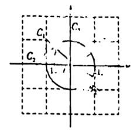
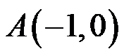
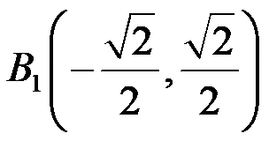
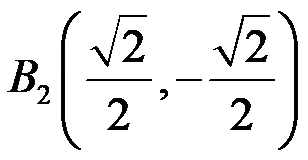
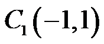
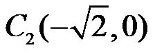
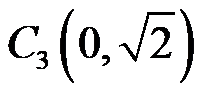
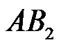
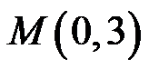
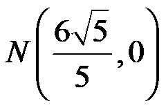

2023年北京市中考数学真题 · 数学解答题 第28题
28. 在平面直角坐标系 中，
中， 的半径为1．对于的弦
的半径为1．对于的弦 和外一点C给出如下定义：
和外一点C给出如下定义：
若直线，中一条经过点O，另一条是的切线，则称点C是弦的“关联点”．

（1）如图，点

，
，
①在点

，
，
中，弦的“关联点”是______．②若点C是弦

的“关联点”，直接写出的长；（2）已知点

，
．对于线段 上一点S，存在的弦
上一点S，存在的弦 ，使得点S是弦的“关联点”，记的长为t，当点S在线段上运动时，直接写出t的取值范围．
，使得点S是弦的“关联点”，记的长为t，当点S在线段上运动时，直接写出t的取值范围．